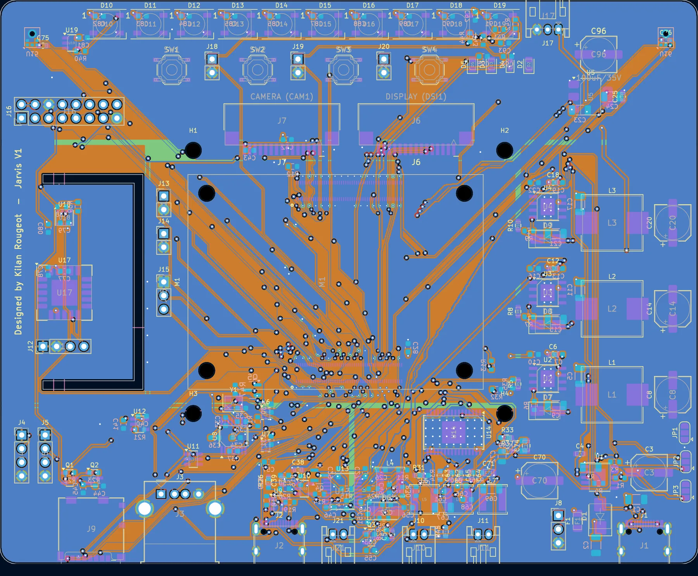
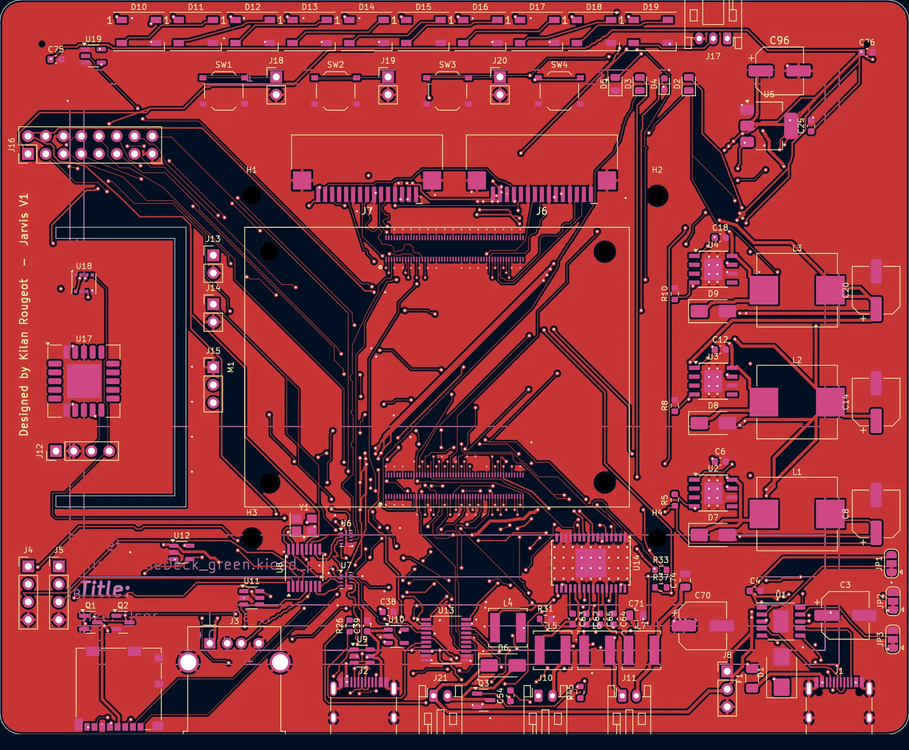
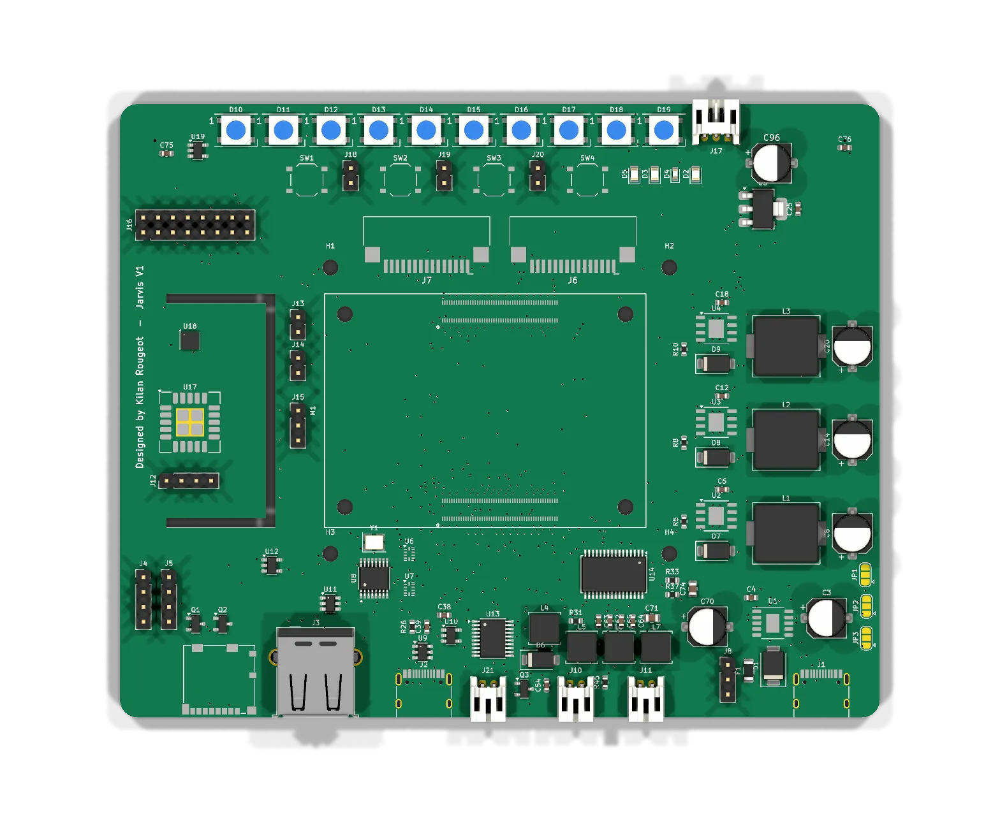
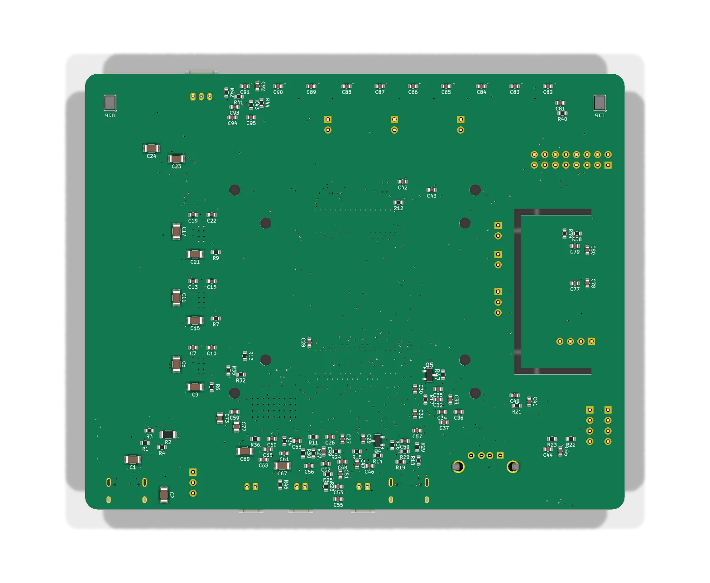
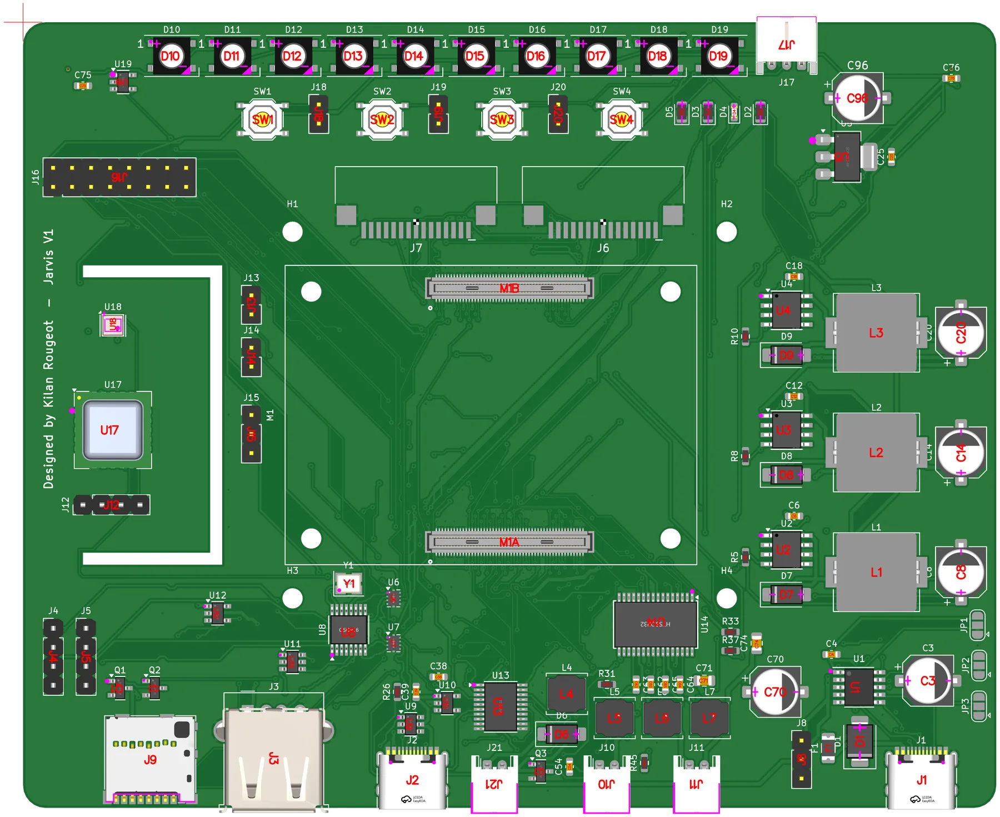
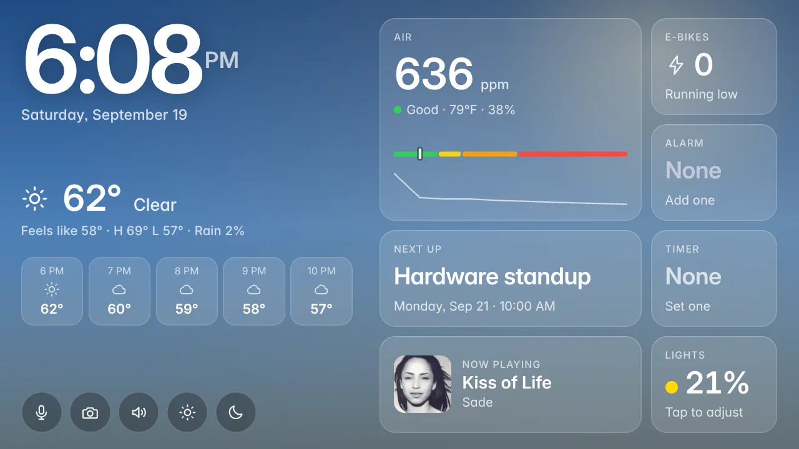
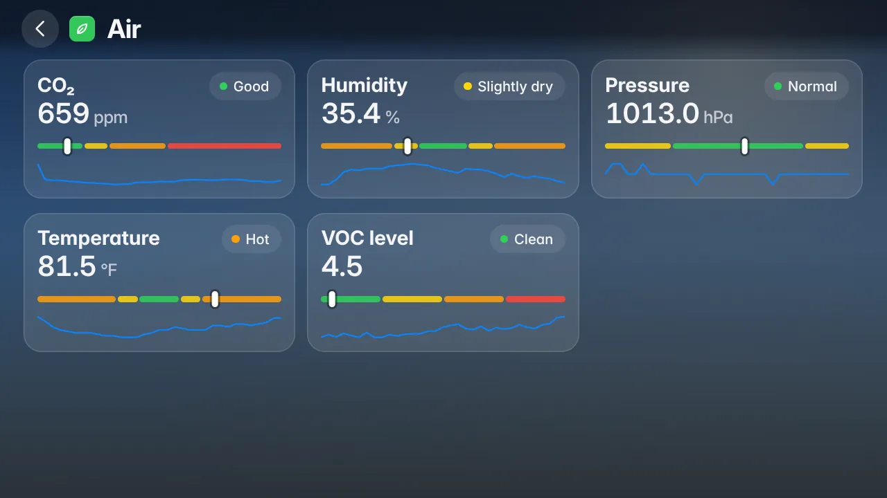
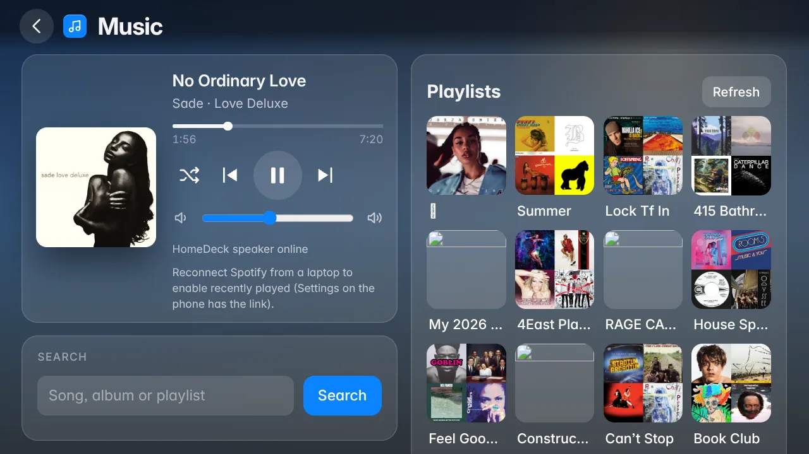
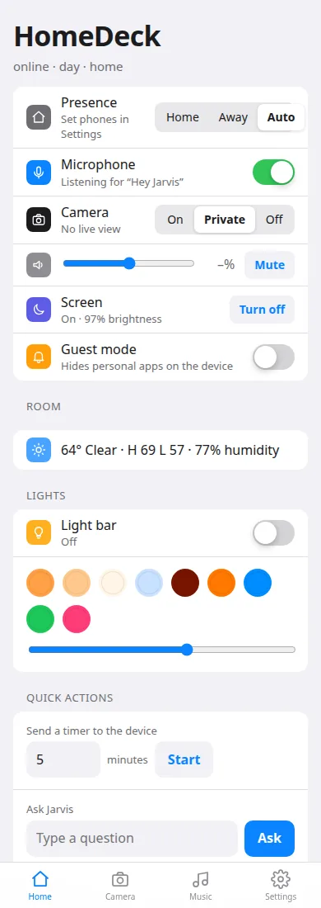
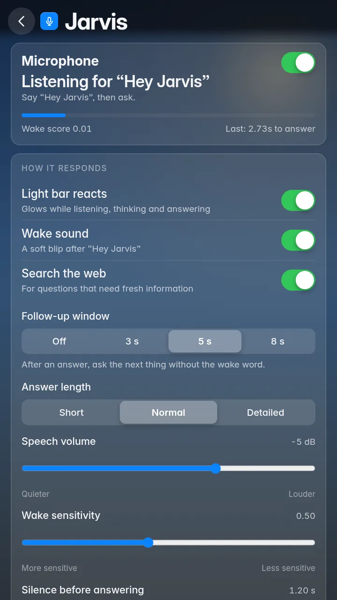

HomeDeck is a smart-home deck for my room: a carrier PCB for the Raspberry Pi Compute Module 4 that bolts to the back of the 7-inch Raspberry Pi Touch Display 2, with CO2 and VOC sensors, stereo speakers, two microphones, a camera and a light bar, plus the software that turns it into a voice assistant called Jarvis. I started it because I wanted to learn PCB design properly, from schematic to a board assembled by a fab. The first revision is on my desk and in daily use.
Overview
The device sits on a shelf and does what an Echo Show does, except I know everything that runs on it. The home screen shows the time, the weather, the CO2 reading, the next calendar event, e-bike availability at the nearest Bay Wheels station and what is playing. Saying "Hey Jarvis" starts a conversation: timers, alarms, lights, music, volume and maths are matched as commands on the device without a language model, and everything else goes to a hosted model. A phone app on a personal domain, behind Google sign-in, gives the same controls from anywhere plus the camera, an intercom and presence.
Hardware at a glance
- Board: 130 x 105 mm, 4 layers, USB-C Power Delivery input (CH224K sink), three TPS5430 buck converters for the CM4, the peripherals and the USB ports, and an AMS1117 3.3 V regulator.
- Compute: Raspberry Pi CM4 with Wi-Fi, 4 GB RAM and 16 GB eMMC, on two Hirose DF40C 100-pin sockets, flashed through a USB-C port using an nRPIBOOT jumper and a pair of USB muxes.
- Display and camera: Touch Display 2 (7-inch, 720 x 1280) over DSI, Camera Module 3 over CSI, both on 15-pin FPC connectors.
- Sensors: SCD40 (CO2) and BME688 (temperature, humidity, pressure, VOC) on a slotted tongue at the board edge, and a header for a BH1750 light sensor behind the bezel. An SHT4x on the same header is auto-detected.
- Audio: PCM5102A I2S DAC into a TPA3118D2 stereo class-D amplifier (more than 5 W per channel into 8 ohm from the 15 V rail), two JST speaker connectors and two ICS-43434 MEMS microphones ported through holes in the board.
- Everything else: a CH334R USB hub feeding a USB-A port, a second USB-C port and two internal headers, ten WS2812B LEDs along the top edge with a header for an external strip, a fan header, power and user buttons, a UART debug header, a 2 x 8 expansion header and a microSD slot.
Software at a glance
- One Python service on the CM4 with a module per feature: voice, timers, alarms, reminders, lists, calendar, Spotify, YouTube, sensors, weather, bikes, transit, flights, lights, display, fan, sleep sounds, camera, presence, intercom, guest mode, Wi-Fi, notifications, auth and audio.
- A touch UI in Chromium kiosk mode, with an app registry, a home screen, an app switcher and an on-screen keyboard I wrote myself.
- Voice: openWakeWord for "Hey Jarvis" locally, Groq Whisper for speech to text, Groq chat with a web search fallback, Orpheus text to speech with Piper as an offline fallback.
- A phone app served behind Google sign-in, with secrets redacted from every API response.
Design
The board is a KiCad 7 project with a hierarchical schematic of nine sheets (power, CM4, USB, video, SD, audio,
sensors, UI, mechanical) and a fully routed four-layer PCB. I did not draw it by hand. The whole circuit is
described once in a Python file, tools/circuit.py, and a set of scripts generates the symbols and
footprints, the schematic, the netlist and the BOM from it. That way the schematic, the board and the BOM cannot
disagree with each other. The schematic is "label style": every pin carries a global label with its net name,
so clicking any label in KiCad shows every place that net goes. It is not pretty, but it is complete and it is
exactly what the board was built from.
Placement and routing also went through a script: a grid router I wrote in C++ for the project, then post-processing into conventional 0, 45 and 90 degree geometry with chamfered corners, and length matching of every differential pair with small meanders on the shorter leg. The next section describes those tools. All the DSI, CSI and USB pairs ended up within 1.3 mm of each other, except the second USB-C port's data pair at 7.7 mm, which the receptacle's interleaved pads made impossible to match automatically. That is about 2.5 percent of a USB high-speed bit, so it works, but it is the first thing I would tidy by hand.
The stack-up is signal, ground, power, signal. The inner power layer is split into planes for each rail: 5V_SYS under the CM4, the 15 V input along the right edge, 5V_USB bottom left, 5V_PERIPH along the top and 3.3 V under the sensor tongue. Design rules are 0.2 mm tracks and 0.15 mm clearance in general, down to 0.1 mm inside the two CM4 fan-out areas, where every used pad gets a short stub to a small via in three staggered rows. The CM4 sockets have 0.4 mm pitch pads, so the board needs ENIG rather than HASL.
The mechanical decision that shaped the layout is that the board mounts on the display's own four M2.5 standoffs, on the 58 x 49 mm Raspberry Pi hole pattern, with the bottom of the board facing the back of the panel. So the bottom side only carries flat passives, two small transistors and the two microphones, and everything tall sits on top. All external connectors are on the bottom edge, the FPC connectors sit above the CM4 with the ribbons exiting toward the top, the sensors are on a tongue at the left edge with two routed slots for thermal isolation, and the microphones are at the top corners. The first mounting was portrait, the panel's native orientation; the device ended up in landscape, for a thermal reason described in the build section, and the software treats landscape as the default.




The tools I built
The board was not drawn in KiCad, it was generated. Everything in tools/, about 4,000 lines of
Python and C++, exists to turn one circuit description into a schematic, a placed and routed board and a set
of fab files, and to do it again from scratch whenever the circuit changed. The pipeline is four commands:
gen_lib.py, gen_sch.py, route.py and export.py. The
routing step rebuilds an unrouted board every time and takes 20 to 40 minutes.
It starts with circuit.py: every part with its LCSC number, connected pin by pin to named nets
through a small netlist model that looks the pins up in KiCad's own symbol libraries, so a wrong pin name
fails before anything is drawn. From there gen_lib.py writes the project symbols and footprints
KiCad does not ship (the CM4 socket pair, the PD controller, the amplifier, the USB mux and switches, the
BME688, the FPC connectors), gen_sch.py writes the nine-sheet schematic with a global label on
every pin, and gen_pcb.py builds the board: outline and mounting holes, the placement (the main
parts have coordinates in the script, each passive is put next to the chip it belongs to, and a legaliser
pushes overlapping courtyards apart), the CM4 fan-out stubs and vias, the rule areas and the power planes.
The router is the part I am proudest of. KiCad has no autorouter, only its interactive push-and-shove router,
and since the board is rebuilt from scratch by a script, anything routed by hand would have been thrown away
on the next regeneration. I also wanted rules KiCad's tools do not know about: the fan-out areas, power nets
that drop to the inner planes instead of being routed, and a reserved exit direction for every fine pad.
route.py exports the problem as JSON (pad polygons, plane outlines, per-net widths and
clearances, the fourteen differential pairs and those short "escape strips") and hands it to
router.cpp, a negotiated-congestion grid router in the PathFinder style. It is in C++ because
the grid is 0.1 mm over a 130 by 105 mm board on two signal layers, about 1.4 million cells per layer. Each
net is routed with A* against hard obstacles (pads, keepouts, the escape strips) and soft ones (other nets'
copper, which only costs a penalty); then every net that overlaps another is ripped up and rerouted with a
history cost on the contested cells, and the loop repeats until the conflicts are gone. Power nets end in
vias down to their plane, and each leg of a differential pair is pulled toward its partner's path. An earlier
version, router_v1.cpp, was plain A* without the negotiation; the second one replaced it. Back
in Python, route.py imports the tracks and vias, fills the zones, runs KiCad's DRC from the
command line and reroutes any unconnected ground pads as plane drops until the report is clean. The final
board has 160 nets, 0 DRC errors and 0 unconnected items.
The raw router output looks like a staircase, so a set of post-processing scripts turns it into what a person would have drawn, each one checking clearance against a shared geometry model before it touches anything. Then the pairs are measured and tuned, the ground pours are stitched, and the fab files are written.
| Tool | What it does |
|---|---|
circuit.py, netlist.py, kilib.py | The circuit: every part, its LCSC number and its pin-to-net connections, checked against KiCad's symbol libraries. |
gen_lib.py | Project symbols and footprints that KiCad does not ship. |
gen_sch.py | The nine-sheet hierarchical schematic, label style, one global label per pin. |
gen_pcb.py | Outline, holes, placement and legaliser, CM4 fan-out, rule areas, planes, and the custom DRC rules file. |
route.py, router.cpp | Routing problem export, the C++ negotiated-congestion router, import, zone fill, DRC and the repair passes. |
straighten.py, octilinear.py, merge_collinear.py, chamfer.py | Staircases to straight and 45 degree runs, collinear pieces merged, right angles chamfered, only where the new copper is clear. |
obstacles.py | The shared clearance model (shapely geometry in an R-tree) the post-processing scripts check against. |
skew.py, pathlen.py, tune_pairs.py | Length report for the 14 pairs, signal-path length through the ESD parts, and meander bumps on the shorter leg to within 0.25 mm where there is room. |
gnd_islands.py, gnd_stitch.py, gnd_stitch2.py, via_grid.py | Find every patch of pour with no path to the ground plane, give each a via, then lay a 5 mm grid of stitching vias over the open pour. |
freespot.py, place_fp.py, partial.py | Find a clear spot for a footprint near a target, move it there, and route a few nets with everything else fixed. |
export.py, render.py | Gerbers and drill files, the JLCPCB BOM and placement file with per-package rotation corrections, the schematic PDF and the board renders. |
manual_fix.py, c2_manual.py, dump.py, clearchk.py, try_*.py | One-offs: a handful of hand-specified tracks and vias (including the second USB-C pair), debugging dumps around a pad, and reroute experiments that measure skew and DRC, then keep or revert. |
I wrote these tools with Claude as a pair programmer. I described what each step had to do and what the fab and the datasheets required, ran the result against the board, read the DRC report, the skew table and the renders, and went back with what was wrong; the code came out of that loop, over many rounds. The one-offs in the last row are honest about where automation stopped: five ground vias, a moved resistor and one USB pair were placed by coordinates, and the experiments were how I found out which reroutes helped.
Build
The boards were made and assembled by JLCPCB: four layers, 1.6 mm, ENIG, and two-sided "Standard" assembly because 116 of the 218 parts sit on the bottom. The BOM has 66 lines, 38 of them JLC Basic parts and 28 Extended, and I picked a Basic part wherever one existed, which is why there are three small TPS5430 bucks instead of one large one. Three parts were out of stock at order time and had to be swapped (the fuse, the FPC connectors and the CM4 sockets; the genuine Hirose sockets had 25 in stock and an 11-day lead). Because JLCPCB's placement preview can rotate parts, I wrote an orientation list for every assembled part, saying whether its orientation matters and where its pin 1, cathode band or plus mark has to sit. The tactile switches are the trap there: a 90 degree error shorts the button permanently.

Bring-up followed a checklist: resistance from each rail to ground with no CM4 fitted, then the PD charger alone to check the 15 V input and 5.0 to 5.2 V on the three rails, then the module. The eMMC was flashed through the second USB-C port with the nRPIBOOT jumper, which flips both USB muxes so the CM4 talks directly to a PC. On the software side it took a few device-tree overlays: the DSI panel, I2C6 on GPIO 22 and 23 for the sensors, a power button on GPIO 3, and a custom audio overlay for the DAC and the two microphones. A serial adapter on the UART header saved time twice.
Two rev A boards were assembled. Board #1 works completely and is in daily use after two solder-jumper changes: USB-C PD, all three bucks, the CM4 with Wi-Fi and Bluetooth, the display and touch, the camera, both sensors and the I2C header, the microphones, the amplifier, the LEDs, the fan, the buttons and the USB ports. Board #2 is assembled and not yet powered. Here is what went wrong on the first revision and what the next one changes.
| Rev A finding | Workaround on board #1 | Rev B change |
|---|---|---|
| Laptop-class PD chargers negotiate 15 V and trip during the 5 to 15 V step, probably from inrush into about 280 uF of input capacitance. Only 9 V sources worked. | Cut and re-bridged the CH224K configuration jumpers to request 9 V. The amplifier has less headroom, which the small speakers do not need. | Inrush limiting on VBUS, a smaller bulk capacitor, 9 V as the default jumper setting. |
| The 5V_PERIPH rail was dead on first power-up, then came alive on handling: a poor joint on the inductor, which sits over a plane cutout on a wide footprint. | Powered the display from 5V_SYS on the expansion header until the joint reflowed itself. | Easier inductor footprints, test points on every rail, rails routed so a meter probe reaches them. |
| The microSD slot is dead with an eMMC CM4, because eMMC modules disable the SD interface. | Camera clips go to Google Drive instead. | Drop the slot or mark it Lite-only. |
| Button A on GPIO 16 is claimed by the stock voice HAT audio overlay. | A custom overlay with the amplifier shutdown line moved. | Keep buttons off GPIOs that common audio overlays use. |
| Toggling the amplifier shutdown pin per playback pops. | Shutdown held high permanently; mute by silence. | A proper mute with an RC ramp; keep the DAC running between plays. |
| The temperature sensors read 8 to 10 F high in portrait mounting, sitting above the CM4 in its rising warm air. | Mounted in landscape (sensors beside the module) plus a configurable offset. | Sensors on the edge farthest from the CM4, fan placed to pull air away from them. |
| The display sometimes fails to probe at boot; reseating the ribbon fixes it. Swapping the display and camera ribbons broke the display once. | Power cycle with the ribbon reseated. | A locking FPC connector for the display, both connectors labelled with their ribbon lengths. |
| The fan is on or off only; the low-side switch was not meant for 25 kHz PWM and fans stall below about 35 percent. | Auto thresholds in software. | A proper PWM fan stage or a 4-wire fan header. |
| With a plain 5 V charger the CM4 reports under-voltage instead of refusing to boot. | Use a PD charger. | A VBUS-good comparator that holds the CM4 in reset below 8.5 V, and a PD status LED. |
Software
Everything runs as one systemd service on the CM4. The core, server.py, handles config, the module
loader, an event bus, the HTTP API, the auth gate, secret redaction and the content security policy. A module
is one Python file with a name, defaults, a state(), an api(), a blocking
start() loop, an optional intent(text) for voice and optional raw HTTP routes. Apps
on the screen register with the shell and get render, update, a home-screen tile and event hooks. Timers,
conversation history, air history and YouTube history persist across restarts and power loss.
The web app is the device UI in Chromium and a separate phone app. The Spotify module is a Spotify Connect
speaker (go-librespot) plus a full Web API client, with on-device sign-in using my own on-screen keyboard
injected into Spotify's login pages. YouTube plays through a yt-dlp search and an ffmpeg remux into a native,
ad-free player. The sensors module keeps a one-minute history and gives a spoken air report every day. Chromium
shares the ALSA chain with Jarvis and Spotify so that one software volume covers everything, and a watchdog
restarts the browser when its shared-memory leak fills /tmp, never while the screen is being
touched.
Echo cancellation was the hard part. The speaker feed is teed into an ALSA loopback card, and a helper built on WebRTC AEC3 reads the microphones and the loopback and feeds cleaned 16 kHz audio to the voice pipeline. The echo reaches the microphones 20 to 40 ms before the loopback copy, so the microphone path is delayed 60 ms. On the device at volume 55 it removes about 16 dB of music echo; if the helper dies twice in a minute the pipeline falls back to plain capture. Later additions: a USB microphone that joins the on-board pair automatically when plugged in, one wake-word model running on the sum of both microphones, a ten-band equaliser with a pink-noise room calibration, and music ducking of 14 dB for the whole voice turn so Jarvis is audible over Spotify.
There is no custom OS image. The device runs stock Raspberry Pi OS and an install.sh sets up the
service, the kiosk script, the audio configuration, Caddy for the phone app, DuckDNS and UPnP, the Spotify
event hook and the voice dependencies. Web files hot-reload in the kiosk when their version changes.





Enclosure
The enclosure is the mechanical engineering part of the project. I exported the populated board from KiCad as a STEP model and designed the case around it in Onshape. The constraints were set before I opened the CAD: a 130 x 105 mm board sitting on the four M2.5 standoffs of the 7-inch Touch Display 2, bottom side toward the back of the panel, with 3 to 4 mm standoffs setting the gap because the bottom side only carries parts about a millimetre tall; the CM4, its heatsink and everything tall on the far side; and every external connector on one board edge. The case is a front part that holds the display behind its bezel and a back cover over the board, in landscape, so that the sensors sit beside the CM4 rather than above it in its rising warm air.
Most openings were dictated by the board. The sensor tongue at the board edge has two routed slots for thermal isolation, and the case is open there so the SCD40 and BME688 read the room rather than the inside of the box. The BH1750 light sensor is on a lead from its header so it can sit behind the bezel where it sees light, and the camera module sits in the bezel on its ribbon. The two microphones are bottom-ported and listen up through 1 mm holes in the board, so the case needs matching holes at the top corners. The two small speakers, the fan and the USB-C connectors on the bottom edge each get their own opening, and the CM4 heatsink needs the fan to move air over it and out. The light does not come from the on-board LED bar; an external WS2812B strip on the strip header does that, seventy LEDs in one chain, and the software maps which of them are visible through the case. The power button is wired to its panel header; the two other button headers were clipped off to make room.
The case is 3D printed on a Bambu Lab printer in several pieces at 0.24 mm layers, with supports where the overhangs need them. The 3MF files sit alongside the KiCad project. Renders and photos are next.
What I learned
PCB design
I went in knowing how to read a schematic and came out having ordered a four-layer board with a 0.4 mm pitch connector on it. The lessons that stuck are the ones the fab and the bench taught me. Datasheets matter down to the detail: the TPS5430 wants some ESR on its output, the CM4 wants every pull-up referenced to its own 3.3 V so no pin sees voltage while the module is off, and the CH334R hub has its crystal capacitors built in. Power needs more thought than logic: my inrush into 280 uF tripped the laptop chargers I tried, a wide inductor footprint over a plane cutout gave me an intermittent rail, and I had no test points to find either with a meter. Heat moves: a temperature sensor above the CM4 reads ten degrees high. And the fab's placement preview deserves a part-by-part check, because a rotated tactile switch is a permanently pressed button.
Coding
The software is bigger than the board. Structuring it as a core plus one file per feature, with an event bus and a small module contract, is what let it grow from a bench dashboard to a full assistant without collapsing. I learned a lot of Linux audio the hard way: ALSA chains, dmix and softvol, loopback cards, why Chromium and PipeWire fight over a sound card, and that an empty state file for the equaliser plugin makes every ALSA client crash. Measuring beat guessing every time: the echo canceller only worked once I measured the delay between the microphones and the reference, and the second wake-word model only got dropped once I measured that one instance costs half a CM4 core.
Working with AI
I used Claude throughout this project, and I am not ashamed of it. The toolchain described above, from
circuit.py to the C++ router and the export scripts, was written with it as a pair programmer:
I said what each step had to do, ran it against the board, read the DRC report and the skew table, and came
back with what broke. It also helped me write the assistant software, read datasheets I had never opened,
review the design against them before I ordered, and work through the PD inrush and the audio chain when the
boards were on the bench. What it could not do was hold the board, reseat a ribbon, notice the rail that came
alive when I picked the board up, model the case, or decide what the device should be. The design decisions,
the bench work, the CAD, the mistakes in the rev A table and the fixes are mine. I know the circuit well
enough now to explain every block on it, which was the point.
Skills used
- PCB design in KiCad 7: a four-layer stack-up with split power planes, fan-out under a 0.4 mm pitch connector, DSI, CSI and USB 2.0 differential pairs, and a power tree from USB-C PD through three bucks and an LDO.
- Embedded Linux on the CM4: Raspberry Pi OS, device-tree overlays, ALSA, systemd services, a Chromium kiosk.
- Python and C++ tooling: the KiCad generation scripts on the pcbnew API, shapely geometry for the post-processing, the C++ grid router.
- CAD in Onshape and 3D printing on Bambu Lab printers.
- Bring-up and bench debugging: rail resistance and voltage checks, a serial console, and turning what the boards did into the rev B list.
- Fab and assembly ordering: JLCPCB BOM and placement files, part selection against stock and the Basic and Extended libraries, part-by-part orientation checks in the placement preview.
What I would do differently
- Not ask for 15 V. The amplifier is the only 15 V consumer and the speakers do not need it. Rev B defaults to 9 V and adds inrush limiting so laptop chargers stop tripping.
- Put test points on every rail and route them where a probe reaches, and choose inductor footprints that are easy to solder and inspect.
- Either drop the microSD slot or read the CM4 datasheet more carefully before adding it: with an eMMC module it can never work.
- Place the environmental sensors as far from the CM4 as the board allows, with the fan pulling air away from them, rather than relying on slots.
- Check every GPIO against the audio overlays I plan to use, so a button does not land on a pin the sound card claims.
- Use the amplifier's mute pin with a ramp instead of its shutdown pin, and keep the DAC running between plays.
- A locking FPC connector for the display, a real PWM fan stage, and a comparator that keeps the CM4 in reset until the PD contract is good.
- On the software side, skip the second wake-word instance. Summing both microphones into one model scores as well and costs half the CPU.
- Hand-route the second USB-C port's data pair; 7.7 mm of skew works but should not ship in rev B.